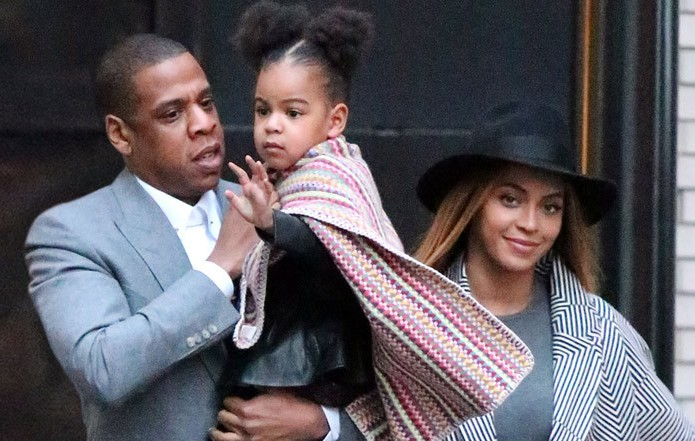

The life and glory of "Queen Bey" Beyonce
Beyonce Giselle Knowles is a singer-songwriter with six solo albums and 20 Grammys under her belt. Born and raised in Houston, Texas, Beyoncé performed in various singing and dancing competitions as a child. She rose to fame in the late 1990s as lead singer of the R&B girl-group, Destiny's Child.
She is married to Shawn "Jay-Z" Carter and they have three kids together - Blue Ivy, Rumi and Sir Carter.
